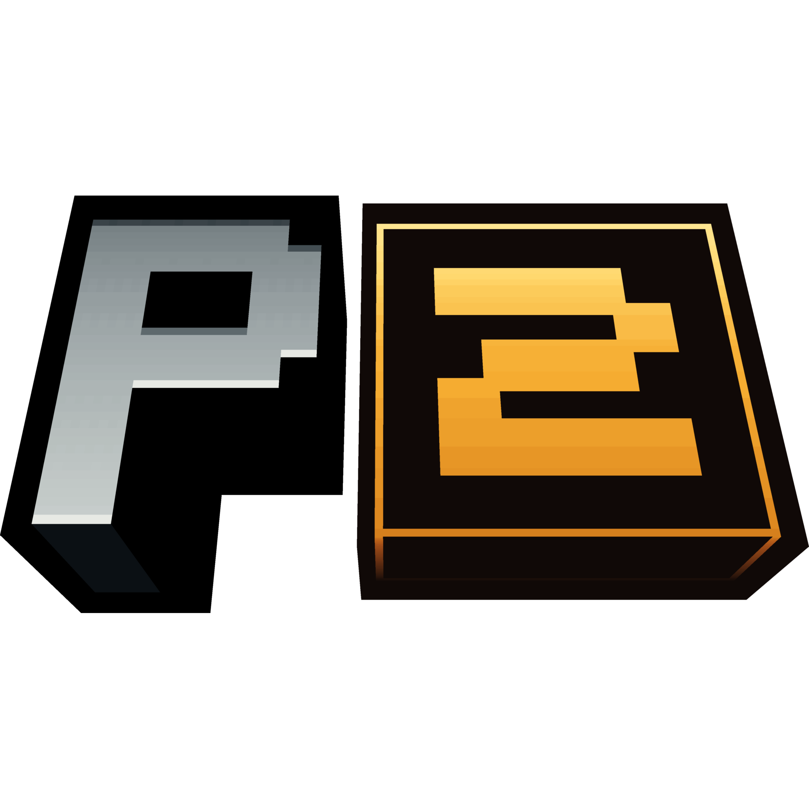
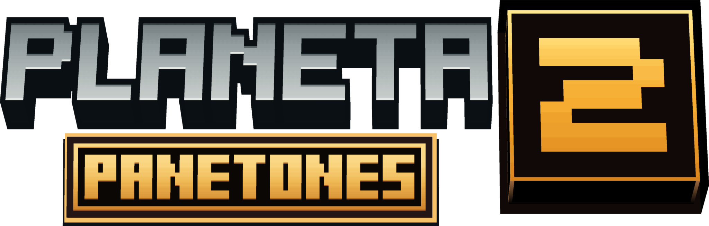

Elige cómo entrar
Microsoft abrirá una pestaña para iniciar sesión con tu correo. También puedes usar un perfil local no premium.
Los perfiles locales solo entran en mundos y servidores que los acepten.

Microsoft abrirá una pestaña para iniciar sesión con tu correo. También puedes usar un perfil local no premium.
Principal o Optimizada. Cada una conserva sus propios mundos y mods.

PrincipalSolo se permite una cuenta activa. Para usar otra, quita la actual y vuelve a iniciar sesión.
Puedes elegir una skin PNG de Minecraft.
Este ajuste se aplica a todas las instancias.
Asignada: — · RAM física: —
Se aplica a todas las instancias.
Buscando actualizaciones…
El pack se verifica antes de jugar.
Servidor próximamente.
Planeta Panetones instala y actualiza las instancias que elijas. Cada jugador es responsable de usar una cuenta de Minecraft válida cuando el servidor requiera autenticación.
Los perfiles locales solo funcionan en mundos y servidores que los acepten. El launcher guarda la cuenta y las preferencias en este equipo y no envía credenciales al servidor del modpack.
El uso de Minecraft y de los mods está sujeto a los términos de sus respectivos autores. Planeta Panetones no está afiliado a Mojang ni Microsoft.